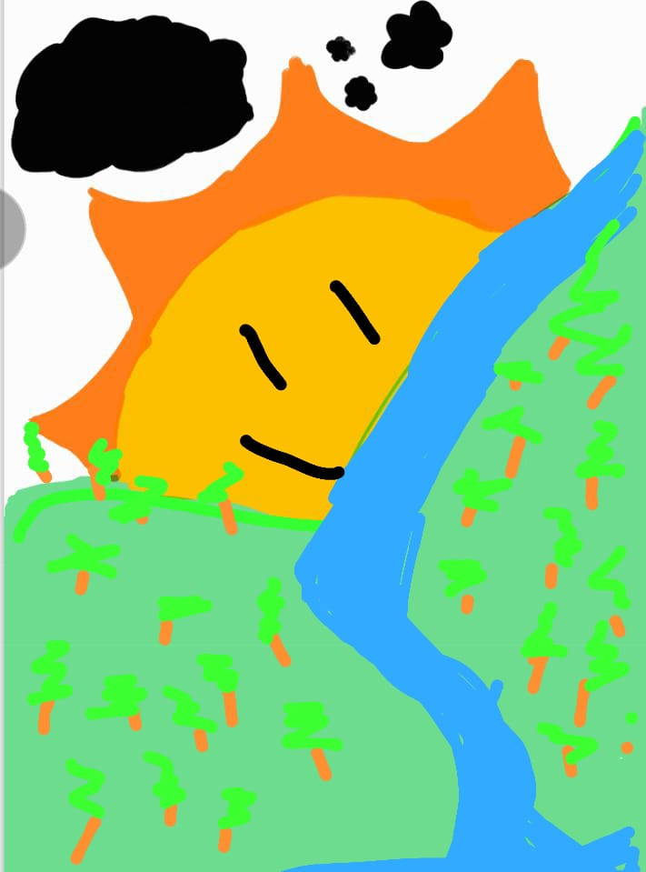

El inicio
Todo comenzó con una partida de ajedrez. Ella me preguntó si podía jugar… y sin saberlo, ya estaba jugando conmigo.
Una persona pequeña en estatura, inmensa en mi corazón.
Mi dianita. ♥️
Talvez tenga pequeñas medidas 🤭, pero su forma de pensar, sentir y amar no conoce medidas. Su sinceridad, su humor y su manera de hacerme sentir en paz la hacen única. Es introvertida y extrovertida a su manera: sabe cuándo hablar y cuándo simplemente estar.
Estar con ella es sentir calma. Me transmite paz, ternura y sinceridad. Me provoca ser romántico sin esfuerzo y me recuerda que el amor también puede ser tranquilo. Amo su forma de tratar a las personas.

Ama escuchando, estando ahí cuando más se necesita. Con consuelo, palabras sinceras, caricias, besos y abrazos. Enseña, corrige y cuida con honestidad.
Y me encanta demasiado.
Todo comenzó con una partida de ajedrez. Ella me preguntó si podía jugar… y sin saberlo, ya estaba jugando conmigo.
Hablar con frecuencia fue suficiente para que me encantara. Poco a poco, sin prisa.
Me haces querer ser mejor, y no como promesa vacía sino como impulso dulce, que nace cuando pienso en ti. Pensarte me mejora el día sin pedirle permiso al tiempo, como si tu nombre tuviera el poder secreto de ordenar el caos. Contigo todo se aquieta, el ruido del mundo aprende a callar y el corazón entiende, porfin que, aquí Contigo es donde debe estar. Me enamorado como vuelves milagroso lo simple, lo pequeño, lo cotidiano. Con un gesto tuyo basta para que todo tenga sentido no te cambio por nada mi amor. Ni por los planes más perfectos, porque elegí quedarme contigo. Y esa elección la volvería a hacer en cada vida. ❤️🌹
Jugábamos ajedrez… y se rindió solo para no perder. Desde entonces entendí que no todo es ganar. Sino disfrutar el momento.
Aprendí que no todas las personas tienen las mismas oportunidades. Que existen personas comprometidas. Y que sí se puede amar de verdad.
Si hoy dudas, recuerda que no tienes que ser perfecta para mí. Estoy aquí. Te escucho. No te comparo. No me alejo. Y aunque no siempre sepa decirlo bien, te elijo con calma.
Este texto no es para convencerte. Es para acompañarte.